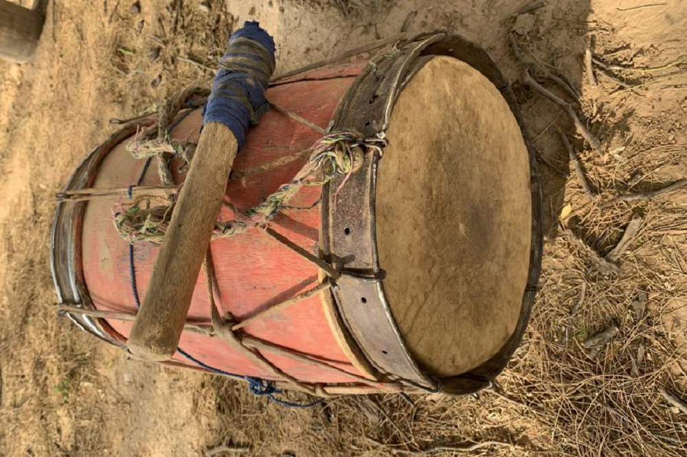

El angúa guásu de los Ava
Nota 018
Inicio > Blog Bitácora de un músico > Nota 018
Los Ava, un pueblo de habla guaraní de las tierras bajas de Bolivia y Argentina, preservaron una compleja tradición musical modelada por influencias amazónicas, arawak, andinas y coloniales, pese a siglos de guerras, desplazamientos e intervención misionera. Estrechamente vinculada a rituales como el aréte guásu, su herencia musical incluye tambores, flautas, trompetas, silbatos, idiófonos y el singular violín turumi, generalmente elaborados artesanalmente por los propios intérpretes e insertos en prácticas ceremoniales, sociales y simbólicas que articulan música, danza, memoria, sexualidad, guerra y relaciones entre vivos y muertos.
Los membranófonos de los Ava constituyen una familia de tambores tubulares de doble parche, tocados exclusivamente por hombres y conocidos genéricamente como angúa, entre los que se incluyen el angúa guásu, el angúa rái y el michi rái, cuyas formas y distribución variaron históricamente entre Bolivia y Argentina.
Angúa guásu es un término guaraní que puede traducirse como "tambor grande": con entre 50 y 80 cm de altura y entre 30 y 50 cm de diámetro, es el mayor integrante de la familia de tambores de los Ava. También recibe los nombres de angúa aretépe ("tambor de fiesta"), angúa tubícha ("tambor principal") o tambora. Es el único membranófono considerado femenino por los Ava.
Se construye ahuecando un tronco de madera blanda, generalmente cedro (Cedrela balansae o C. fissilis), ishpingo o roble criollo (Amburana caerensis), o zapallo caspi (Pisonia ambigua). Una vez vaciado, el cuerpo se desbasta hasta obtener paredes de aproximadamente 1 cm de espesor. Luego se perfora un orificio de 1 cm de diámetro con un hierro al rojo, que funciona como saida de presión, una característica tomada de los tambores europeos. La madera puede ser reemplazada por un recipiente de hojalata de dimensiones adecuadas.
Los parches (mboapíre) se elaboran con cuero de corzuela (Mazama gouazoubira), agutí (Dasyprocta azareae), iguana (Tupinambis sp.) o lagarto overo (Teius teyou). Los dos primeros cueros se cubren con ceniza fría y luego se raspan con el borde de una caña para eliminar el pelo. El parche que no se percute puede confeccionarse con cuero vacuno y llevar bordona de distintos materiales. El cuero se tensa sobre un aro de liana gruesa (isípo) y se cose en espiral con puntadas largas, usando fibra vegetal o alambre fino. Una vez colocados los parches sobre el cuerpo del tambor, se añaden dos aros de palo amarillo (Phyllostylon rhamnoides), aguay (Puoteria salicifolia), tala (Celtis tala) o peteribí (Cordia trichotoma), unidos en sus extremos mediante alambre o tientos. Estos aros presentan una serie de perforaciones por las que se pasa en zigzag una correa de fibra vegetal, cuero vacuno o cuero del cuello de ciervo para tensarlos entre sí.
Para tocarlo, el músico, de pie, se lo cuelga al hombro y lo percute con una maza llamada mbopúka, provista de una cabeza de lana y cuero. Aparece especialmente durante el aréte guásu: se dice que su sonido convoca a vivos y muertos a participar de la celebración. Marca el pulso de la melodía de las flautas y señala las variaciones coreográficas de la danza.
Más información sobre estos artefactos sonoros puede encontrarse en el libro digital de acceso libre Instrumentos musicales de los Ava, accesible a través de la sección "Libros digitales sobre música. Serie 1".